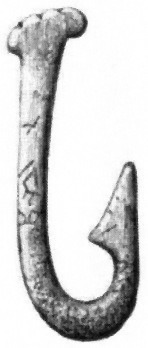
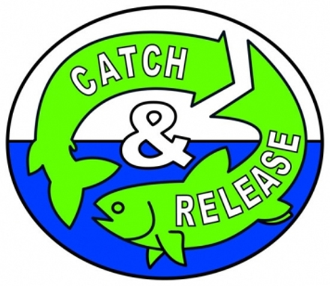

A horgászat kezdeteitől a Catch and Release filozófiáig
Kezdetek
Az ember már a Kőkorszak óta horgászik. Ebben az időben még munkálatlan felszerelést vagy horgász szereléket használtak. Az első horgászok természetesen táplálékszerzés okán űzték ezt a tevékenységet: csalijukat a csontból, fából, vagy kőből készített horogra erősítették, majd azt egy karóhoz rögzítették, hogy könnyen lehessen kézzel mozgatni. Lassan erősebb és hegyesebb horgokat fejlesztettek ki, amikor a bronz, réz és más fémek egyre inkább közhasználatba kerültek.
Az első horgászok rájöttek, hogy a horgászbottal nagyobb emelőerőt érnek el, amikor a kifogásnál húzniuk kell a halat. Eleinte egyszerű faág szolgált horgászbotként majd a későbbiekben kifinomultabb famegmunkálásról beszélhetünk. A horgászat első művészi ábrázolása időszámításunk előtt, megközelítőleg 2000-ben, Egyiptomban jelent meg. A görög filozófusok, Platón és Arisztotelész is megemlítik a horgászat gyakorlatát korai írásaikban.
Sporthorgászat születése
A XV. század után kezdődött a horgászat evolúciója, mialatt igazi sportággá nőtte ki magát. Előtte, a horgászat nem jelentett mást, mint a túlélés egyik módját. 1496-ban egy angol bárónő, Dame Juliana Berner a Treatyse of Fysshynge wyth an Angle (óangol nyelven a Horgászat Módszertana) című művében ír a horgász horog és bot készítés részleteiről. Ez a könyv alapozta meg a horgász tudományt. Majd másfél évszázaddal későbbi mű, Izaak Walton Tökéletes horgász című írása, nagyhatású kézikönyvnek bizonyult a fejlettebb horgász felszerelést, a halbiológiát, a különböző halfajok táplálkozási szokásait és e sport mögött húzódó filozófiát illetően.
Az első orsó
Az első orsót Angliában találták fel a XVIII. században, bár néhány elmélet szerint a kínaiak már sokkal korábban, a harmadik században megtervezték annak egyszerűbb változatát. Ezután gyors ütemben folytatódott a hatékonyabb horgász felszerelés fejlődése és a halfajok viselkedéséről nyert ismeretek bővítése, ami a horgászat széles körben való elterjedéséhez vezetett és nagy népszerűségre tett szert.
Catch and Release
Ahogy a horgászat egyre népszerűbb lett, egyre több horgász, mint Lee Wulff és A.J. McClane, mérte fel a halfaj populációvédelmének jelentőségét. 1939-ben alakult a Nemzetközi Sporthorgász Szövetség a halak és életterük védelméért. Alapelvük, hogy a stabilan fenntartott halpopuláció biztosítja e sport jövőjét. Ez a non-profit szervezet megfogalmazta az alapvető horgászati etikát azzal a céllal, hogy a felelősségteljes horgászatot propagálja. A környezettudatosság hirdetésének köszönhetően a horgászok nagy része manapság a Catch and Release filozófia híve, melynek lényege, hogy nem sokkal a kifogása után visszaengedik a halat a vízbe, minimalizálva ezzel a halat ért traumát. A fajok halálozási rátájának csökkenését így nem veszélyeztette tovább a sporthorgászat. Ez persze azon a feltevésen alapul, hogy a legtöbb visszaengedett hal túléli a kifogást, így a catch and release módszer támogatja a stabil hal populációt.
Ajánlott linkek